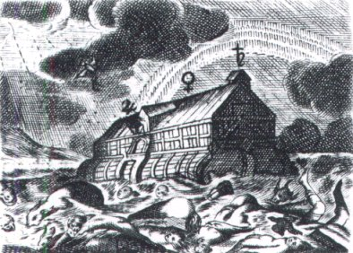
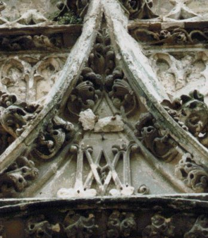
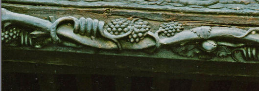
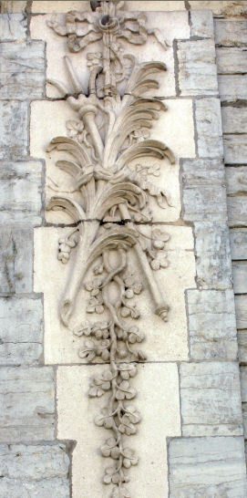

Emblema XXXIII.
revu le 9 mai 2002
Hermaphroditus mortuo similis, in tenebris jacens, igne indiget.
(L’Hermaphrodite, semblable à un mort
et gisant dans les ténèbres, a besoin de feu1.)Cet être bicéphale au sexe double, image
Funèbre, a cet aspect quand l’humide lui manque2.
Caché dans la nuit sombre, il réclame du feu.
Si tu lui en fournis, il revit aussitôt.
Le feu détient toute la force de la Pierre,
L’or et l’argent, celles du soufre et du mercure3.
Lorsque sévit le froid de l’hiver, c’est ici l’un des secrets de la nature, les grenouilles et les hirondelles gisent comme mortes, submergées par les eaux, tandis qu’à l’arrivée du printemps elles recouvrent le sens et le mouvement, accomplissant les opérations de la vie sensitive. Si, même en pleine saison des brouillards, on place à l’air chaud ou dans une étuve celles que l’on a trouvées dans l’eau, elles se mettent bientôt à remuer, comme en été. Cela prouve qu’il ne leur manque rien d’autre que la chaleur externe par laquelle la chaleur interne enfermée à l’intérieur puisse être excitée et actualisée. Les philosophes parlent de la même manière de leur Hermaphrodite qui, gisant dans les ténèbres, offre l’apparence de la mort et a besoin de la chaleur du feu. On dit qu’il gît dans les ténèbres parce qu’il est abandonné au sein d’une nuit d’hiver opaque et froide, c’est-à-dire qu’il demeure dans le Noir, qui est le signe du froid4 ; de là il doit être amené au Blanc grâce à une plus grande intensité de feu et, en augmentant encore celui-ci, au Rouge. En effet, comme le dit Bodillus dans la Turba :
" Rien ne s’engendre sans chaleur ; un bain d’une chaleur intense fait périr, mais s’il devient froid, il fait fuir ; par contre, s’il est tempéré, il convient au corps et lui est agréable. "
Bonellus dit au même endroit :
" Tous les êtres qui vivent meurent aussi : telle est la volonté de Dieu. C’est pourquoi la nature à qui l’humidité a été enlevée ressemble à un mort, tandis qu’elle est abandonnée dans la nuit. Cette nature a alors besoin du feu jusqu’à ce que son corps et son esprit soient changés en terre et deviennent à ce moment semblables à un mort dans son sépulcre. Cela étant accompli, Dieu lui rend l’esprit et l’âme ; débarrassée de toute infirmité, notre nature se trouve affermie et purifiée. Il faut donc brûler sans peur cette chose, etc. "5
Par conséquent le feu qui détruit toutes choses construit celle-ci. A tout le reste il apporte la mort, et à ceci la vie. C’est ici l’unique Phénix qui est restauré par le feu, rénové par les flammes, qui sort des cendres, rendu à une vie nouvelle6. Connu des seuls philosophes, il est brûlé et rappelé à la vie, quelles que soient les rêveries que d’autres nourrissent sur je ne sais quel oiseau qui n’existe nulle part et n’a jamais été vu, si ce n’est d’une manière fabuleuse.
L’Hermaphrodite dont parlent les philosophes possède une nature mixte, masculine et féminine ; l’une se transforme en l’autre sous l’influence de la chaleur. De femme en effet il devient homme, ce qui ne doit pas sembler, dans l’œuvre des philosophes, chose si étonnante, puisque, si l’on doit en croire les historiens, on a vu un grand nombre de personnages changer de sexe7. Les poètes rappellent les noms de Cénéas, d’Iphis et de Tirésias, tel Pontanus dans Les Etoiles8 :
" Qu’ils déplorent pourtant leur sexe, et qu’ils souhaitent devenir Cénéas, ou bien femme complète. "
Et Ausone :
" Ramenée à son antique figure, Ceneus se désole. "
Ainsi, sous le consulat de Licinius Crassus et de C. Cassius Longinus, une jeune fille devint garçon, à Cassinum, et Licinius Mutianus rapporte, selon Pline, qu’il a vu à Argos Ariston qui s’était appelé auparavant Aristouse. Il s’était marié, mais bientôt la barbe et la virilité lui étaient venues et il avait pris femme. Pline lui-même dit avoir vu en Afrique L. Cossicius, citoyen de Tisdritanum, changé en mâle le jour de ses noces, et que ces faits pourraient être confirmés s’il en était besoin. Il est assuré que, sous l’action d’une chaleur croissante, les membres génitaux ou virils font saillie à l’extérieur du corps. La femme est beaucoup plus froide que l’homme et garde cachée au-dedans d’elle-même ce que le mâle porte à l’extérieur, comme le disent les médecins9 ; c’est pourquoi la nature incertaine, ne sachant si elle allait engendrer une femme ou un homme, produisit extérieurement une femme, bien qu’elle eût décidé de faire à l’intérieur un homme. La chaleur augmentant avec l’âge, et le mouvement s’y ajoutant, les membres tenus cachés parurent à l’extérieur et se montrèrent à la vue de tous. Chez les philosophes de même la femme devient mâle sous l’effet de la chaleur croissante, ce qui signifie que l’Hermaphrodite perd le sexe féminin et devient un homme robuste et grave qui ne possède en lui rien de la mollesse et de la légèreté de la femme. C’est ainsi que nous avons vu un jour un enfant hermaphrodite de noble famille passé ou plutôt promu à l’état de mule parfait et apte à engendrer des descendants (tel était l’espoir que l’on formait) grâce au célèbre médecin bolonais Casp. Tagliacozzo et à l’habileté de son art chirurgical. On fit un nouvel orifice au membre viril (qui en était dépourvu) et on ferma l’orifice inférieur semblable à celui d’une femme.
Les philosophes n’ont pas besoin de toutes ces opérations manuelles. En effet, tant que la froideur et l’humidité de la lune sont présentes, ils appellent leur sujet femme, et lorsque la chaleur et la sécheresse du soleil sont là, ils le nomment mâle10. Quand ces quatre qualités s’y trouvent à la fois, ils lui donnent le nom de Rebis ou d’Hermaphrodite. Ainsi il sera facile de convertir la femme, c’est-à-dire le froid et l’humidité, en mâle, ce qui s’opère par la seule chaleur du feu, comme il a été dit. La chaleur en effet éloigne et sépare le superflu des humidités et place dans le sujet son idée, qui est la teinture.
Notes1. C'est un stade intermédiaire de la Grande coction qui est abordé par Maier : le passage du régime de Saturne - la noirceur - à la blancheur - régime de la Lune.

FIGURE I
(Le Lion d'Or ou Vinaigre des Sages, Goosen Van Vreeswijk, 1675 : l'arche de Noé, passage de l'obscurité à la lumière)2. Dans un chapitre précédent et d'autres passages [cf.Atalanta, III, XXVI, XXVIII], Maier nous enseigne, tout au contraire, qu'il faut ôter du corps l'humidité superflue, par digestion, en le faisant littéralement transpirer. Mais il évoquait alors une phase ultérieure de l'oeuvre, le passage du blanc au rouge. Tandis qu'ici, c'est le passage du noir au blanc, qui requiert l'usage du dissolvant.
3. Ce qu'il faut comprendre, c'est que le Rebis n'est qu'un état intermédiaire où les matières ne sont que juxtaposées, si l'on peut dire, amalgamées si l'on préfère, au lieu qu'elles soient en conjonction radicale, ce qui est le but de la deuxième partie de la Grande Coction. C'est la conduite harmonieuse du calorique qui va favoriser ce processus d'accrétion.
4. Le 1er oeuvre consiste en l'élection des matières propres au magistère. Le 2ème oeuvre, dans la préparation des Soufres et du premier Mercure. Le 3ème oeuvre va consister à cuire et décuire les Soufres dans le Mercure. Fulcanelli a insisté sur le fait que les alchimistes appelaient leurs substances tantôt Soufre tantôt Mercure, selon l'aspect présenté par la matière. Dans le 3ème oeuvre, les substances sont tout d'abord introduites dans un creuset brasqué - pour la voie sèche - sous forme porphyrisée. Elles sont sous la forme de chaux et c'est cet état qui est la noirceur. Cet état va durer jusqu'à ce qu'apparaisse un signe, vraisemblablement sous la forme d'irisations [allusion à la queue de paon, cf. emblème XXXII] qui signale la conjonction : c'est ce qu'on appelle la blancheur. Le reste de l'oeuvre consiste à faire croître l'embryon hermétique. C'est la phase de multiplication.
5. Voici ce qu'écrit Albert Le Grand :« Le feu engendre la mort et la vie. Un feu léger dessèche le corps. En voici la raison : le feu arrivant au contact d'un corps, met en mouvement l'élément semblable à lui qui existe dans ce corps. Cet élément c'est la chaleur naturelle. Celle-ci excite le feu extrait en premier lieu du corps ; il y a conjonction et l'humidité radicale du corps monte à sa surface tant que le feu agit au dehors. Dès que l'humidité radicale qui unissait les diverses portions du corps est partie, le corps meurt, se dissout, se résout ; toutes ses parties se séparent les unes des autres. Le feu agit ici comme un instrument tranchant. » [Composé des Composés]

FIGURE II
(Fontenay, cathédrale : les signes du FEU secret - cliché Alain Mauranne)[On a vu dans une section antérieure que les lettres A et M entrelacées, consistaient en un L grec majuscule et un M grec majuscule, où l'on peut deviner, selon ce qu'écrit l'auteur du Pilote de l'Onde Vive, le Bélier et le Taureau]
Il n'est pas aisé de comprendre ce que veut dire Albert. Il semble dire que la conjonction du feu externe et feu interne, propre au corps, va provoquer la sublimation de l'humide radical [sous entendu métallique] en sorte que le corps restant tombe en poudre, à l'instar - comme l'écrit Fulcanelli dans le Mystère des Cathédrales - du poussier de charbon. On serait tenté de penser qu'Albert veut signifier la même substance éthérée que Stahl avait professé, après Becher : le phlogistique. Que fait le feu ? Albert en parle comme d'un instrument tranchant ; on serait tenté de dire qu'il s'agit d'un feu de réduction si nous n'étions pas persuadés, bien au contraire, qu'il s'agit d'un feu de chaux. Il semble qu'il faille disitinguer ici deux sortes d'humidité radicale. La 1ère qui se situe du côté du corps et qui est responsable - par son départ - de la transformation en chaux ; la 2ème qui est liée au dissolvant - au Mercure - et qui permet à la chaux de circuler, c'est-à-dire d'être sous forme dissoute, liquide ou pâteuse selon la température et l'époque de l'oeuvre. Salomon Trismosin, dans sa Toyson d'Or, écrit de manière semblable :
« Le second rang est appelé Coagulation, qui toutefois peut être dite une même chose avec la solution, faisant mêmes effets, la diversité qu'on peut intermettre entre deux n'étant causée que de tant soit peu de distance qu'il y a à parfaire les mutations des premières essences en natures diverses [...] » [cap. II]
C'est ce que nous avons dit, dans l'analyse du Donum Dei : la conjonction est la solution de la putréfaction. Mais il y a plusieurs stades dans cette conjonction. C'est pourquoi Le Breton, dans ses Clefs de la Philosophie Spagyrique, professe qu'il y a quatre putréfactions dans l'oeuvre. C'est aussi pourquoi fulcanelli fait voir que la voie sèche se décompose en une phase humide [solution] et une phase sèche [coagulation]. Mais alors que la solution s'obtient rapidement, la coagulation traîne. Il semble que la frontière entre les deux phases soit marquée par des irisations qui expliqueraient le mystère des couleurs de la queue de paon, qui se situeraient à peu près dans ce qu'il est convenu d'appeler le régime de Jupiter. C'est, à n'en point douter, un point d'expérience, qui ne se laisse que difficilement pénétrer par la synthèse mentale. Voyons là-dessus cet autre extrait du Composé des Composés :
« [...] notre Pierre commence à pourrir et à se coaguler, c'est la putréfaction et la coagulation ; finalement quand elle se calcine et se fixe par privation de son humidité radicale aqueuse, c'est la calcination et la fixation ; tout cela se fait par le seul acte de chauffer, en un seul fourneau, en un seul vaisseau, comme il a été dit. »
C'est, en substance, ce que nous venons de supputer. En somme, la coagulation serait l'équivalent de la transformation des matières en chaux [classique oeuvre au NOIR], tandis que la calcination serait équivalente à l'une des phases de la conjonction [fixation labile : l'oeuvre au BLANC] mais il ne s'agit là que de conjectures...Dans ses Fig. Hiér., Nicolas Flamel écrit :
« Ainsi la chaleur agissant sur et contre l'humidité radicale métallique, visqueuse ou oléagineuse, engendre sur le Sujet la noirceur. Car au même tems la Matière se dissout, se corrompt, noircit, et conçoit pour engendrer. Parce que toute Corruption est Génération, et l'on doit toujours souhaiter cette noirceur. »
Dit en d'autres termes, cela revient à ce qu'écrivent Albert et Trismosin. Limojon a traité aussi ce point :
« [...] qu'il y a cette difference, entre la calcination ordinaire, qui se fait à force de feu, et la calcination naturelle; que la premiere détruit le corps, et consume la plus grande partie de son humidité radicale; mais la seconde ne conserve pas seulement l'humidité du corps, en le calcinant; mais encore elle l'augmente considerablement. » [Lettre aux Vrais Disciples d'Hermès]
Ce que Limojon de Saint-Didier veut dire, c'est que le Mercure va réaliser une circulation de la matière pendant le même temps où elle sera calcinée. Ce brassage incessant est la seule manière d'arriver à obtenir un Rebis définitif, le véritable embryon hermétique, résultat d'une conjonction radicale et capable de croître ainsi que de se multiplier, au lieu que la calcination ordniaire, se faisant sans entremetteur, sans héraut, ne produirait qu'une chaux ordinaire...
6. Sur le phénix, voyez nos Gardes du Corps. L'allégorie est celle de la réincrudation. Le phénix est synonyme de Pierre au blanc, mais il ne faut pas l'entendre de la façon habituelle qu'ont les alchimistes ; le terme d'élixir au blanc semble plus approprié.
7. L'emblème XIII est révélateur à cet égard. Mais il est de coutume de montrer un Roi symbolisant la Pierre terminée, et non une Reine.
8. Iphis [ijiV], jeune fille de Crète, était destinée à être exposée par sa mère Téléthousa parce que son père, Ligdos, ne voulait pas de fille. Sur les conseils d'Iris, elle fut élevée et habillée comme un garçon au point que Ianthé, une jeune fille de son pays, s'y trompa et en tomba amoureuse. Finalement, Iphis fut métamorphosé en jeune homme, permettant ainsi son mariage. Notez que Iphis est proche de ijioV [moutons forts et vigoureux ; on connaît encore ijiaV : prêtresse d'Artémis. De façon plus générale, la racine iji désigne un mouvement de « force » qui implique une nature masculine plutôt que féminine. Il faut donc que ces moutons aient un rapport, non pas avec Ariès mais avec Arès].
FIGURE III
(ancien hospice du Saint-Esprit, galerie boisée - Besançon - Cliché Alain Mauranne)[superposition de la pâte mercurielle, en haut, où l'on reconnaît des dragons, et de la pâte sulfureuse, en bas, où l'on voit des grappes de raisin, mêlées à l'Esprit, qui ondule au sein de la matière]
Quant à Tirésias, c'est avec Calchas, l'un des plus célèbres devins de la mythologie grecque. Né de la nymphe Charicio, il acquit son don de prophétie dans des circonstances singulières. Un jour, il rencontra deux serpents qui s'accouplaient [les Gémeaux, cf. caducée d'Hermès] et les tua. Il fut aussitôt changé en femme. Sept ans après [chiffre d'Apollon, en rapport avec le signe resplendissant qui marque le début de la réincrudation des Soufres], il rencontra les mêmes serpents entrelacés [signe des Poissons] et reprit sa forme première.
9. Notez que l'emblème porte le croissant lunaire, signe évident de la forme première dont se revêt le Rebis. Et il s'agit du premier quartier de lune, symbolisant le Mercure [le dernier quartier symbolise le Soufre blanc]. On est obligé de tenir compte de ce rapport de cabale et de souligner, avec d'autres auteurs, que le quartier de Lune représenté sur la planche I du Mutus Liber devrait être le premier et non le dernier...Cette anomalie semble ne pas avoir été retenue par E. Canseliet lorsqu'il examiné les planches du Livre Muet. Il y a plus. La lune elle-même conditionne le sexe de la matière : au début, féminine [liquide] et de nature mercurielle ; au centre, lors de la pleine lune, hermaphrodite ; à la fin, masculine [fixe] et de nature soufrée.
10. la froideur et l'humidité renvoient à l'AIR et à l'EAU [cf. Atalanta, XIII, XXIX] qui sont les éléments propres au Mercure. La chaleur et la sécheresse définissent la TERRE et le FEU [cf. note 3 de l'Atalanta, XXIX]. Ripley écrit par ailleurs :« C'est pourquoi la Séparation ainsi faite est cause de la vraie conjonction de l'Eau et de l'Air, avec la Terre et le Feu. Tellement que chaque Elément peut être conduit en l'autre, et demeurer ainsi à toujours selon son désir. Fais comme les potiers avec l'argile, et le lut, tempère l'épais non trop liquide. Ainsi tu parviendras plutôt à la Dessiccation. » [Douze Portes]
Or, le travail du potier, nous l'avons vu bien souvent, a de nombreux rapports avec celui de l'alchimiste [cf. Atalanta, XV]. Le potier, en effet, manie une terre aqueuse que, par le biais du feu, il va dessécher et transformer en terre cuite. Mais cela ne suffit pas à l'alchimiste qui ajoute une teinture qui donne, en masse, une couleur à la pièce. C'est le secret de teindre en masse qui est l'arcane le plus difficile de tout l'Art. E. Canseliet, à cet égard, cite le potier Piccolpassi et notamment une planche qui résume admirablement la première partie de l'oeuvre et qui contracte des rapports avec la planche I du Donum Dei :

FIGURE IV
(Fontaine des Clarisses, Charles-François Longin, 1755, Besançon : arbre hermétique - cliché Alain Mauranne )[on remarquera sur cette figure IV le trident de Neptune et le palmier de patience]
« L'iconographie symbolique a souvent figuré le sujet minéral des Sages, dans son état primordial et tel qu'il est extrait de son gîte minier, par le rocher aride qui supporte et nourrit un arbre vigoureux et surchargé de fruits. C'est ce motif que l'on remarque [...] sur la pénultième page du très curieux Art du Potier de Cyprian Piccolpassi. » [De Cyrano Bergerac, in Alchimie, Pauvert, 1978]